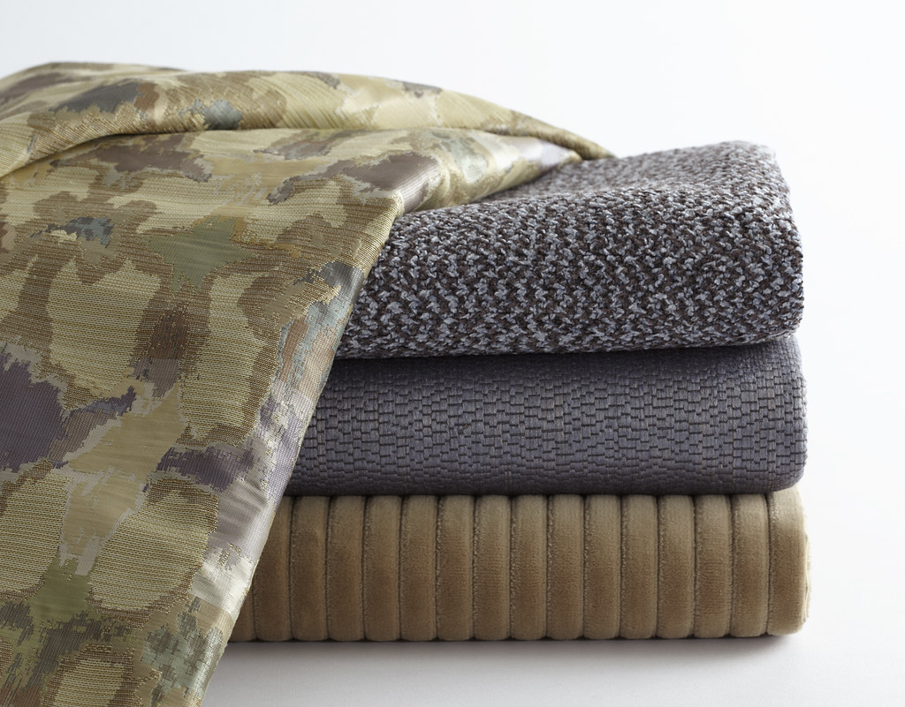

「Ｒe Lien」という名前に込めた想いと、私たちが髪と向き合う姿勢をご紹介します。
「Ｒe Lien(アールエリアン)」という店名は、フランス語の「re(再び)」と「lien(結び、絆)」を組み合わせた言葉です。髪は、一本一本が細い糸のような存在でありながら、集まって初めて一つの形をつくります。日々の暮らしの中でその糸が絡まったり、ほどけてしまったりすることがあるように、髪や心も、時とともに少しずつ整えが必要になります。
Ｒe Lienという名前には、「一度切れてしまった糸を、もう一度結び直す」という意味を重ねています。久しぶりにいらしたお客様も、初めてこの店の扉を開けてくださったお客様も、ここで髪を整えることが、ご自身と向き合う時間、そして私たちとの新しいご縁を結び直す時間になればという想いで、一席一席に向き合っています。
技術だけでなく、カウンセリングで交わす何気ない会話、仕上がりを鏡で確認するその瞬間まで。すべてが「結び目」をひとつずつ丁寧につくる作業だと考えています。水戸市見和という地域に根を下ろしながら、これからも一人ひとりのお客様との糸を、長く、大切に結んでいきたいと考えています。
スタイルのご相談だけでなく、髪のお悩みやふだんのお手入れの様子まで、じっくりお伺いするところから施術は始まります。カウンセリングにかける具体的な時間・流れは追ってご案内いたします。
お客様の髪質や頭皮の状態に配慮しながら、施術方法をご提案しています。使用する薬剤・技術の詳細は近日公開予定です。
糸を結び直すように、気持ちがほどけていく時間を過ごしていただけるよう、店内の雰囲気づくりにも心を配っています。店内の様子は写真の準備が整い次第、随時掲載いたします。